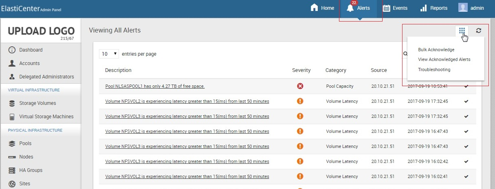
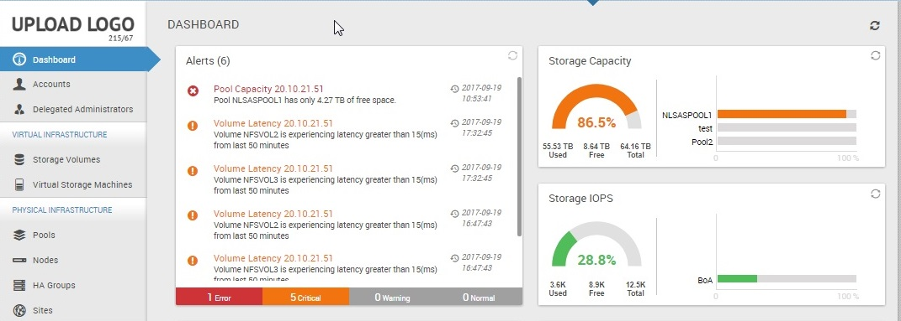
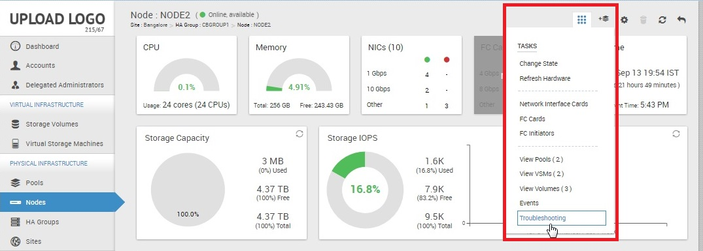

Monitoring
Monitoring provides an intuitive visualization of storage statistics. Monitoring foregrounds relevant back end activities in an easy user interface for administrators. It provides a generic outlook of the components such as storage, input/output, throughput, latest data, status, alerts, and system configuration.
Various dashboards dynamically represent disk utilization, storage utilization, throughput, input/output, and status of network interface cards attached to the system. Alerts and Events feature keeps a regular check on what is happening with the product. All events - even adding an additional IP address or modifying an existing one - get registered and monitored.
The feature also provides a notification system where the administrator is informed through email/text messages when an alert is generated in the system.
Continuous monitoring of your network
- Helps you discover problems long before they become critical
- Enables you to take proactive measures
- Ensures that performance is always at expected levels
- Ensures that resources are effectively utilized
Monitoring in CloudByte ElastiStor
Monitoring in CloudByte ElastiStor can be classified as follows:
- Node level alerts: The alert information specific to the Node.
- Dashboard alerts: Graphical representation of monitoring statistics at granular levels.
- Events: A snapshot of all ElastiCenter-specific events.
Node level alerts
Node level alerts provide a list of alerts specific to the Nodes.
- In ElastiCenter, click Alerts. All alerts associated with the Node are displayed.
- Click the Acknowledge icon to acknowledge the alert and it disappears from the list. To acknowledge all the alerts, click Bulk Acknowledge in the Actions Icon.

Emailing alerts
The following settings in Global Settings let you email alerts:
- By default , alerts are not emailed. To receive alerts over email, set
alert.email.enabletotrue. The alerts are mailed to the email that you specified when you updated your profile. For details, see "Reset password and configure auto-alert options". To add multiple users, add the email IDs separated by comma inalert.email.addresses. - You can set a filter to the alerts mailed based on severity using the option
alert.email.severity. By default, all alerts are mailed (as the value set is4). - To specify the sender email ID, use the option
alert.email.sender. If you do not specify an ID, the ElastiCenter domain name is displayed along with IP address of ElastiCenter.
Events
To get a list of ElastiCenter events,
- In ElastiCenter, click Events.
- Select Events in the Select View. All events are listed.
To get a list of specific events, go to the component page and then click Events. For example, for events related to only Storage Volumes:
- In the Storage Volumes page, select a Storage Volume for which you want to generate events.
- In the following page, click Events in the actions icon.
Dashboard Alerts
Dashboard provides a visual representation of monitoring statistics such as performance, usage, capacity, and availability. To see the details, select the component and then make a specific selection.
The following figure is a dashboard representation of the alerts

Advanced debugging options
The Troubleshooting option provided in the Node page, Pool page, and VSM page provides a set of information that help you with advanced debugging. The options provide information such as the following:
- For Pools: Pool I/O Status and Pool Properties
- For VSMs: NIC and Netstat information
- For Nodes: I/O Status of various disks, GMultipath status, and Camcontrol device list for all available disks
When you select an option, details are provided in a tabular format. To access the Troubleshooting option,
- In the Node/Pool/VSM page, click a specific Node/Pool/VSM.
- In the Actions Icon, click Troubleshooting under Tasks.
- Select the action and then click Update.
